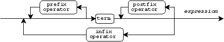

Expression Subcontexts · Classes of Expressions · Class Conversions · Type Conversions · Promoting · Balancing · Assigning and Type Casting · Changing Representations · Pointer Arithmetic · Reading Expressions · Grouping · Operator Summary · Order of Evaluation
Add Assign · Add · Address of · Assignment · Bitwise AND Assign · Bitwise AND · Bitwise Exclusive OR Assign · Bitwise Exclusive OR · Bitwise Inclusive OR Assign · Bitwise Inclusive OR · Bitwise NOT · Comma · Conditional · Divide Assign · Divide · Equals · Function Call · Greater Than Or Equal · Greater Than · Indirection · Left Shift Assign · Left Shift · Less Than Or Equal · Less Than · Logical AND · Logical NOT · Logical OR · · Multiply Assign · Multiply · Not Equals · Plus · Point at · Postdecrement · Postincrement · Predecrement · Preincrement · Remainder Assign · Remainder · Right Shift Assign · Right Shift · Select · sizeof · Subscript · Subtract Assign · Subtract · Type Cast
You write expressions to determine values, to alter values stored in objects, and to call functions that perform input and output. In fact, you express all computations in the program by writing expressions.
The translator itself must evaluate some of the expressions you write to determine properties of the program. The translator or the target environment must evaluate other expressions prior to program startup to determine the initial values stored in objects with static duration. The program evaluates the remaining expressions when it executes.
This document describes the different classes of expressions and the restrictions on each class. It presents the common rules for writing all expressions, determining their types, and computing their values. It also discusses the constraints on the flow of control through an expression.
Within a statement or declaration, every full expression that you write inhabits one of three contexts:
More generally, however, every full expression or subexpression that you write inhabits one of four expression subcontexts, depending on its goal:
An rvalue subcontext specifies a value that has an object type other than an array type. You create an rvalue subcontext wherever you need to specify a test or value to the translator, determine an initial value prior to program startup or compute a value when the program executes.
An lvalue subcontext designates an object, but its expression can have either an object type or an incomplete type. You create an lvalue subcontext wherever you need to access the value stored in an object, alter the stored value, or determine the address of the object. (If the type is incomplete, you can determine only the address of the object.)
A function-designator subcontext designates a function. Hence, its expression has a function type. You create a function-designator subcontext wherever you need to call a function or determine its address.
A side-effects subcontext specifies no value and designates no object or function. Hence, its expression can have a void type. You create a side-effects subcontext when you need to cause only side effects.
For example, consider the following code sequence:
void f(int); int x; f(x = 3);
In the last line:
f is in a function-designator subcontextx is in an lvalue subcontext3 and x = 3 are both in rvalue subcontextsf(x = 3) is in a side-effects subcontextEvery expression that you write belongs to one of several expression classes, depending upon its form. Four of these classes are closely associated with the four expression subcontexts:
The first two of these classes have a number of subclasses. For instance, an arbitrary rvalue expression can be evaluated only by the program when it executes. One connotation of the term ``rvalue expression'' is that you cannot write such an expression where the translator must be able to determine its value before the program executes. Four subclasses of rvalue expressions, however, have a value that the translator or the target environment can determine prior to program startup:
An address constant expression specifies a value that has a pointer type and that the translator or target environment can determine prior to program startup. Therefore, the expression must not cause side effects. You must not write subexpressions with a void type. (You cannot write a function call, assigning, or comma operator, except as part of the operand of a sizeof operator.) You write address constant expressions to specify the initial values stored in objects of pointer type with static duration.
For example:
extern int first; static int *pf = &first; &first is address constant
An arithmetic constant expression specifies a value that has an arithmetic type and that the translator or target environment can determine prior to program startup. Therefore, the expression must not cause side effects. You must write only subexpressions that have arithmetic type. (You cannot write a function call, assiging, or comma operator, except as part of the operand of a sizeof operator.) You write arithmetic constant expressions to specify the initial values stored in objects of arithmetic type with static duration.
For example:
extern int counter = 0; static int flt_bits = 6 / 0.30103 + 0.5; static int ret_bytes = sizeof f();
An integer constant expression specifies a value that has an integer type and that the translator can determine at the point in the program where you write the expression. The same restrictions apply as for arithmetic constant expressions. In addition, you must write only subexpressions that have integer type. You can, however, write a floating-point constant as the operand of an integer type cast operator. You write integer constant expressions to specify:
For example:
extern int a[20], a_copy[sizeof a / sizeof a[0]];
enum {red = 1, green = 4, blue = 16} color;
A #if expression specifies a value that can be determined by an if or elif directive. After preprocessing replaces all names within the expression, the same restrictions apply as for integer constant expressions.
For example:
#if __STDC__ && 32767 < INT_MAX
Lvalue expressions fall into one of four subclasses:
An accessible lvalue expression designates an object that has an object type other than an array type. Hence, you can access the value stored in the object.
For example:
static const struct complex imag = {0, 1};
return (imag); imag is accessible lvalue
A modifiable lvalue expression designates an object that has object type other than an array type or a const type. Hence, you can alter the value stored in the object.
For example:
static int next_no = 0; return ++next_no; next_no is modifiable lvalue
An array lvalue expression designates an object that has an array type. The type can be incomplete. You often write expressions that implicitly convert an array lvalue expression to an rvalue expression of a pointer type. You can also take the address of an array lvalue expression. For example:
static int bmask[] = {1, 8, 2, 4};
int (*pb)[] = &bmask; &bmask is pointer to array
y = arg & bmask[i]; bmask is array lvalue
scan_it(bmask); bmask becomes pointer to int
An incomplete non-array lvalue expression designates an object that has a void type or an incomplete structure or union type. You can only take the address of such an expression. For example:
extern struct who_knows rom; static struct who_knows *rom_base = &rom;
Many of the expression subclasses are proper subsets of other subclasses. In other cases, the translator can convert an expression of one class to another when the context demands it. The following diagram illustrates all classes and subclasses of expressions and how they relate. Each box denotes a different class or subclass. It contains a subset of all expressions that you can write. An unlabeled arrow connects each subset to its containing set.
For example, an integer constant expression is a subset of all arithmetic constant expressions, which in turn is a subset of all rvalue expressions. An incomplete non-array lvalue expression is not a subset of any other. A label on an arrow tells you that a conversion occurs if you write an expression of one class where the context requires a result of another class. For example, an rvalue expression that you write in a side-effects subcontext becomes a void result by dropping the value associated with the rvalue.
The translator can make four conversions to satisfy context:
If you write an rvalue expression in a side-effects subcontext, the translator discards the value of the expression and converts it to a void type. For example:
int y; y = 3; rvalue y = 3 becomes void
If you write an accessible lvalue expression in an rvalue subcontext (such as a test or value context), the translator accesses the value stored in the object to determine the result. A qualified type (const or volatile) becomes its corresponding unqualified type. For example:
const int x; int y; y = x; const int lvalue x becomes int rvalue
If you write an array lvalue expression in an rvalue subcontext, the translator converts the type array of T to pointer to T. The value of the expression is the address of the first element of the array. For example:
int a[10], *pi; pi = a; array a becomes pointer rvalue
If you write a function-designator expression in an rvalue subcontext, the translator converts the type function returning T to pointer to function returning T. The value of the expression is the address of the function. For example:
int f(void); int (*pf)(void); pf = f; function f becomes pointer rvalue
Within several contexts the translator converts the type of a scalar expression (or subexpression). The conversions are called:
This section describes each of these conversions and the context in which it occurs. It also shows how the translator determines the value of the converted type from the value of the original type.
Except when it is the operand of the sizeof operator, an integer rvalue expression has one of four types:
When you write an expression in an rvalue subcontext and the expression has an integer type that is not one of these types, the translator promotes its type. If all of the values representable in the original type are also representable as type int, then the promoted type is int. Otherwise, the promoted type is unsigned int.
Thus, for signed char, short, and any signed bitfield type, the promoted type is int. For each of the remaining integer types (char, unsigned char, unsigned short, any plain bitfield type, or any unsigned bitfield type), the effect of these rules is to favor promoting to int wherever possible, but to promote to unsigned int if necessary to preserve the original value in all possible cases.
For example:
signed char ch;
unsigned short us, f(char *, ...);
f("%i%x", ch, ch becomes int
us); us becomes int or unsigned int
When you write an infix operator that has two arithmetic rvalue operands, the translator frequently determines the type of the result by balancing the types of the two operands. To balance two types, the translator applies the following rules to the promoted types of the operands:
Each of the operands is converted to the balanced type, the arithmetic operation occurs between the now identical types, and the result of the operation has the balanced type. For example:
int i;
long lo;
double d;
return ((i + lo) i becomes long
+ d); (i + lo) becomes double
You store a value in an object by writing an expression that
contains an assigning operator. The assigning operators are
=,
*=,
/=,
%=,
+=,
-=,
<<=,
>>=,
&=,
^=, and
|=.
If the type of the aalue to be stored by an assigning operator is compatible with the type of the object, the program stores the value unmodified. Otherwise, the translator determines the appropriate conversion to perform before storing the new value.
You can also specify a type conversion by writing a type cast operator. You can specify any type conversion permitted for an assigning operator, plus several other conversions between scalar types.
The translator defines a number of conversions between scalar types that you can specify by assigning or type casting. It does not define all possible conversions, however:
int i;
char *pc = (char *)&i; valid type cast
*(int *)pc = 3; also valid
if (*pc == *(int *)pc) also valid
printf("int stores l.s. byte first\n");
extern int sum(int, int);
void (*pv)(void) = (void (*)(void))∑
if (((int (*)(int, int))pv)(1, 2) == 3)
printf("sum was called properly\n");
The following table summarizes all possible scalar conversions. Note that you can convert any scalar type to any other scalar type by specifying no more than two conversions. In many cases, however, at least one of the conversions is implementation defined.
Pointer to
From: Arithmetic Incomplete Pointer to
To: Type or Object Function
Arithmetic any to integer to integer
Type only only
Pointer to from integer any ---
Incomplete or only
Object
Pointer to from integer --- any
Function only
When you convert between any two arithmetic types, what happens to the value depends on the number of bits used to represent the original and final types. The following table summarizes all possible conversions between arithmetic types. The table assumes that:
X occupying N bits can
represent (at least) all integers in the open-ended interval
(-2^(N-1), 2^(N-1)).X occupying N
bits can represent all integers in the half-open interval
[0, 2^N) (and no others).X can be characterized as having
N bits reserved for representing sign and magnitude, so it
can exactly represent (at least) all integers in the open-ended interval
(-2^(N-1), 2^(N-1)).
Conversion N < M N == M N > M
signed integer discard m.s. same value same value
to M-N bits
signed integer (can overflow)
unsigned integer if (X < 2^(N-1)) if (X < 2^(N-1)) same value
to same value same value
signed integer else impl.-def. else impl.-def.
(can overflow) (can overflow)
floating-point if (|X| < 2^(N-1)) if (|X| < 2^(N-1)) if (|X| < 2^(N-1))
to trunc(X) trunc(X) trunc(X)
signed integer else impl.-def. else impl.-def. else impl.-def.
(can overflow) (can overflow) (can overflow)
signed integer if (0 <= X) if (0 <= X) if (0 <= X)
to X % 2^N same value same value
unsigned integer else impl.-def. else X + 2^N else X + 2^N
unsigned integer X % 2^N same value same value
to
unsigned integer
floating-point if (0 <= X < 2^N) if (0 <= X < 2^N) if (0 <= X < 2^N)
to trunc(X) trunc(X) trunc(X)
unsigned integer else impl.-def. else impl.-def. else impl.-def.
(can overflow) (can overflow) (can overflow)
signed integer keep sign, same value same value
to keep m.s.
floating-point N-1 bits
unsigned integer + sign, + sign, same value
to keep m.s. keep m.s.
floating-point N-1 bits N-1 bits
floating-point keep m.s. same value same value
to N-1 bits
floating-point (can overflow)
The table shows what happens when you convert an M-bit
representation with value X
to an N-bit representation,
for the three cases where M is less than, equal to, or greater
than N. The abbreviations used in this table are:
impl.-def. --
implementation
definedm.s. -- most significanttrunc(X) -- the integer part of X,
truncated toward zeroX % Y -- the non-negative remainder after dividing
X by YYou can add an integer to a value of type pointer to object.
If the value of the pointer is the address of an array element, then
adding one to the value yields the address of the next array element.
Thus, for a pointer p to any object:
(char *)(p + 1) is identical to (char *)p + sizeof (*p)
If the value of p is the address of the first element
in an array object, then *(p + n) designates element number
n (counting from zero).
If the value of p is the address
of the last element in an array object, then (p + 1) is a valid
address, even though *(p + 1) is not an accessible lvalue.
You can perform pointer arithmetic on (p + 1) just as you can
on the address of any of the elements of the array. If you form any
other address that does not designate an element of the array object
(by adding an integer to a pointer), the result is undefined.
You compose an expression from one or more terms and zero or more operators:

Each term has a well defined type and class. If an expression consists of a single term without operators, then the type and class of the expression are the type and class of the term.
Each operator requires one, two, or three operands. An operand is a subexpression that can itself (generally) contain additional operators as well as terms. If you write an expression with one or more terms and a single operator, then the terms must be the operands of the operator. Each operator accepts operands with only certain combinations of types and classes. The types and classes of the operands determine the type and class of the expression containing the operator.
If you write an expression with one or more terms and two operators, then the translator must determine which terms to group with which operators. You can enclose any subexpression in parentheses to make clear that it groups as a single operand. Such parentheses have no other effect than to control grouping. If you do not write such parentheses, however, the translator applies a number of precedence rules to determine how the expression groups. Every expression you write groups in only one way.
This section describes how to determine the type and class of any term. Later sections in this documents explain the rules for grouping operands in the presence of two or more operators, the effect of each operator, what operands it accepts, and what result it produces.
A term takes one of several forms:

A name in this context be declared as one of three entities:
For a function, the name is a function-designator expression with the declared type. For an object, the name is an lvalue expression with the declared type. For an enumeration constant, the name is an rvalue expression with type int. (You can write a type definition or tag in an expression only as part of a type-name declaration enclosed in parentheses, to make a type cast operator, or as the operand of a sizeof operator.)
If no declaration is visible for one of these entities and if you write a left parenthesis immediately following the name, then the translator implicitly declares the name in the current name space as a function returning int without any argument information.
An integer constant is an rvalue expression whose type depends on the value, the base, and any suffix you write. In all cases, the value is the sequence of digits taken as a number to the specified base. Each base and suffix combination determines a sequence of possible types. The translator selects the earliest type in the sequence that can represent the value of the particular integer constant.
For a decimal integer constant, the sequences are:
U suffix -- unsigned int, unsigned long
L suffix -- long, unsigned long
UL suffix -- unsigned longFor an octal or hexadecimal integer constant, the sequences are:
U suffix -- unsigned int, unsigned long
L suffix -- long, unsigned long
UL suffix -- unsigned longFor example, if type int has a 16-bit representation:
70 070 0x70 all type int 7000U 070U 0x7000 all type unsigned 70000 070L 0x700L all type long
A floating-point constant is an rvalue expression whose type depends on any suffix you write:
F suffix -- float
L suffix -- long doubleIts value is the integer plus fraction parts, taken as a decimal number, times ten raised to the exponent part, taken as a signed decimal number.
A character constant is an rvalue expression. If you specify just one character in the character constant, its type depends on any prefix you write:
L prefix -- the type wchar_t
promotedIts value is the code for the character you specify in the target character set. If you specify other than one character in a character constant, the type and value are implementation defined.
A string literal is an lvalue expression whose type depends on the number of characters you specify and any prefix you write:
L prefix -- array of wchar_t
with repetition count NN is one more than the number of characters you specify when you write the string (for the terminating null character). Its stored value is the sequence of codes for the character(s) you specify in the target character set, followed by the value zero. For example:
"hello" type is array of 6 char L"hai" type is array of 4 wchar_t
The term
sizeof (declaration)
is an rvalue expression of type size_t,
with value as described for that operator.
Any expression you write enclosed in parentheses is a term whose type, class, and value are the same as for the expression. Enclosing an expression in parentheses has no effect other than to control grouping.
In the absence of parentheses, the translator groups operators with operands in the following order:
1. The translator applies a postfix operator immediately following a term before it applies any other operator. It then applies any postfix operators to the right of that operator, grouping from left to right.

2. The translator applies a prefix operator immediately preceding a term and any postfix operators. It then applies any prefix operators to the left of that operator, grouping from right to left.

3. The translator applies infix operators in descending order of precedence. Operators at the same order of precedence group either from left to right or from right to left, as indicated for the particular precedence level.

The translator resolves two ambiguities by:
sizeof (declaration)
as a term (never as the
sizeof operator followed by a
type cast operator)In either case, you can use parentheses to obtain the alternate grouping.
The following table shows all operators grouped by precedence level in descending order.
Operator Notation Grouping postincrement X++ from left to right postdecrement X-- subscript X[Y] function call X(Y) select member X.Y point at member X->Y sizeof sizeof X from right to left preincrement ++X predecrement --X address of &X indirection *X plus +X minus -X bitwise NOT ~X logical NOT !X type cast (declaration)X multiply X * Y from left to right divide X / Y remainder X % Y add X + Y from left to right subtract X - Y left shift X << Y from left to right right shift X >> Y less than X < Y from left to right less than or equal X <= Y greater than X > Y greater than or equal X >= Y equals X == Y from left to right not equals X != Y bitwise AND X & Y from left to right bitwise exclusive OR X ^ Y from left to right bitwise inclusive OR X | Y from left to right logical AND X && Y from left to right logical OR X || Y from left to right conditional Z ? X : Y from right to left assignment X = Y from right to left multiply assign X *= Y divide assign X /= Y remainder assign X %= Y add assign X += Y subtract assign X -= Y left shift assign X <<= Y right shift assign X >>= Y bitwise AND assign X &= Y bitwise exclusive OR assign X ^= Y bitwise inclusive OR assign X |= Y comma X, Y from left to right
The table also shows how operators group within a given precedence level.
For example:
y = m * x + b is y = ((m * x) + b) *p++ = -x->y is (*(p++)) = (-(x->y))
This section describes every operator. It lists the operators
alphabetically by name, showing how to write each one with operands
X, Y, and Z (as needed).
Following a description
of what the operator does is a table of all permissible combinations
of operand types and classes, with the type and class of the result
for each combination.
Some expressions produce a result that has an integer type that
varies among implementations. Each of these types has a type definition
that you can include in the program by including the standard header
<stddef.h>.
The type definitions are:
ptrdiff_t
(which is the type of the
subtract operator
when its operands are both pointers to objects)size_t
(which is the type of the
sizeof operator)wchar_t
(which is the type of an element of a
wide-character
string literal)You do not have to include these type definitions in the program to use the subtract or sizeof operators, for example, or to write wide-character string literals.
If the result of an operation cannot be represented by a value of the result type, then an exceptional result occurs:
If any form of exceptional result occurs, the program behavior is undefined.
A type described below as Q qualified is an optionally qualified type. It can be:
For pointer arithmetic, every object is considered an array
object (with perhaps only one element). If the array a has
N elements, then a[N]
is the element immediately beyond the array.
X += Y
You write X += Y to access the value stored in the object
designated by X, add the value of Y
to the stored value, and store the new value back in the object.
Result X Y type of X arithmetic arithmetic rvalue modifiable lvalue rvalue type of X pointer to object integer rvalue modifiable lvalue rvalue
X + Y
You write X + Y to add the value of
Y to the value of X.
You can add an integer to a pointer value only if the
result is the address of an element within (or just beyond) the same
array object.
Result X Y balanced type of X and Y arithmetic arithmetic rvalue rvalue rvalue type of X pointer to object integer rvalue rvalue rvalue type of Y integer pointer to object rvalue rvalue rvalue
&X
You write &X to obtain the address of the function or
object designated by X. You cannot obtain the address of an
object declared with storage class register.
Result X
pointer to T any object type T
rvalue except bitfield
lvalue
pointer to T incomplete type T
rvalue lvalue
pointer to T function type T
rvalue function designator
X = Y
You write X = Y to store
the value of Y in the object
designated by X. If Y
is an lvalue expression (that is converted to
an rvalue expression to obtain its stored value),
then the object it designates either must have no bytes in common
with the object designated by X or must overlap exactly, and
the objects must have compatible types.
Result X Y
type of X arithmetic arithmetic
rvalue modifiable lvalue rvalue
type of X pointer, structure, or type of X
rvalue union type T rvalue
modifiable lvalue
type of X pointer to qualified T pointer to same or
rvalue modifiable lvalue less qualified type
compatible with T
rvalue
type of X pointer to void pointer to object
rvalue modifiable lvalue or incomplete type
rvalue
type of X pointer to object pointer to void
rvalue or incomplete type rvalue
modifiable lvalue
type of X any pointer type integer zero
rvalue modifiable lvalue rvalue
X &= Y
You write X &= Y to access
the value stored in the object
designated by X, form the
bitwise AND of the value
of Y with the stored value,
and store the new value back in the object.
Result X Y type of X integer integer rvalue modifiable lvalue rvalue
X & Y
You write X & Y to form
the bitwise AND of the values of
X and Y. Each bit of the result
is set if the corresponding
bits in both X and Y are set.
Result X Y balanced type of X and Y integer integer rvalue rvalue rvalue
X ^= Y
You write X ^= Y to access the value stored in the object
designated by X, form the
bitwise exclusive OR of the value
of Y with the stored value, and store the new value back in
the object.
Result X Y type of X integer integer rvalue modifiable lvalue rvalue
X ^ Y
You write X ^ Y to form the bitwise exclusive OR of the
values of X and Y. Each bit of the result is set if
the corresponding bits in X and Y differ.
Result X Y balanced type of X and Y integer integer rvalue rvalue rvalue
X |= Y
You write X |= Y to access the value stored in the object
designated by X, form the
bitwise inclusive OR of the value
of Y with the stored value, and store the new value back in
the object.
Result X Y type of X integer integer rvalue modifiable lvalue rvalue
X | Y
You write X | Y to form the bitwise inclusive OR of the
values of X and Y. Each bit of the result is set if
either of the corresponding bits in
X or Y is set.
Result X Y balanced type of X and Y integer integer rvalue rvalue rvalue
~X
You write ~X to form the bitwise NOT of the value of
X. Each bit of the result is set if the corresponding bit in
X is not set.
Result X type of X integer rvalue rvalue
X, Y
You write X, Y to first evaluate X as a
side-effects context
expression and then to evaluate Y. There is a
sequence point
between the evaluation of the two operands.
Result X Y type of Y void expression any rvalue rvalue
Z ? X : Y
You write Z ? X : Y to evaluate
one of the operands X or Y,
depending on the value of the
test-context expression
Z, which must be a scalar rvalue.
If Z has a nonzero value,
then only X is evaluated; otherwise, only Y is
evaluated. The value of the expression is the value of the operand
that is evaluated, converted to the result type. A
sequence point
occurs between the evaluation of Z
and the evaluation of X or Y.
Result X Y
balanced type of X and Y arithmetic arithmetic
rvalue rvalue rvalue
type of X structure or union type of X
rvalue rvalue rvalue
type of X pointer to T integer zero
rvalue rvalue rvalue
type of Y integer zero pointer to T
rvalue rvalue rvalue
pointer to pointer to pointer to
Q and Q' qualified Q qualified Q' qualified
composite of T and T' type T compatible type T'
rvalue rvalue rvalue
pointer to pointer to pointer to
Q and Q' qualified Q qualified Q' qualified
void void object or
rvalue rvalue incomplete type
rvalue
pointer to pointer to pointer to
Q and Q' qualified Q qualified Q' qualified
void object or void
rvalue incomplete type rvalue
rvalue
void expression void expression void expression
X /= Y
You write X /= Y to access the value stored in the object
designated by X, divide that value by the value of Y,
and store the new value back in the object. (See the Divide
operator following.)
Result X Y type of X arithmetic arithmetic rvalue modifiable lvalue rvalue
X / Y
You write X / Y to divide the value of X by the
value of Y. Dividing by by zero yields an
exceptional result.
For integer types, a positive quotient truncates toward zero.
Result X Y balanced type of X and Y arithmetic arithmetic rvalue rvalue rvalue
X == Y
You write X == Y to test whether the value of X
equals the value of Y. The result is an int rvalue whose
value is 1 if the test is successful; otherwise, the value is zero.
Eachoof the operands is converted to a common test type for the comparison.
The table below shows the test type, rather than the result type.
Test X Y
balanced type of X and Y arithmetic arithmetic
rvalue rvalue rvalue
type of X pointer to T integer zero
rvalue rvalue rvalue
type of Y integer zero pointer to T
rvalue rvalue rvalue
pointer to pointer to pointer to
Q and Q' qualified Q qualified Q' qualified
composite of T and T' type T compatible type T'
rvalue rvalue rvalue
pointer to pointer to pointer to
Q and Q' qualified Q qualified Q' qualified
void void object or
rvalue rvalue incomplete type
rvalue
pointer to pointer to pointer to
Q and Q' qualified Q qualified Q' qualified
void object or void
rvalue incomplete type rvalue
rvalue
X(Y)
You write X(Y) to call a function.
The value of the expression
(if any) is the value that the function returns. A
sequence point
occurs after the program evaluates X
and Y and before it
calls the function.
Result X Y
object type T function returning T zero or more
rvalue function designator argument rvalues
object type T pointer to function zero or more
rvalue returning T argument rvalues
rvalue
void expression function returnigg zero or more
void argument rvalues
function designator
void expression pointer to function zerooor more
returning void argument rvalues
rvalue
X >= Y
You write X >= Y to test
whether the value of X
is greater than or equal to the value of Y. The result is an
int rvalue whose value is 1 if the test is successful; otherwise,
the value is zero. Each of the operands is converted to a common test
type for the comparison. You can compare two pointer values only if
they are the addresses of elements within (or just beyond) the same
array object. The table below shows the test type, rather than the
result type.
Test X Y balanced type of X and Y arithmetic arithmetic rvalue rvalue rvalue pointer to pointer to pointer to Q and Q' qualified Q qualified Q' qualified composite of T and T' type T compatible type T' rvalue rvalue rvalue
X > Y
You write X > Y to test
whether the value of X is
greater than the value of Y. The result is an int rvalue
whose value is 1 if the test is successful; otherwise, the value is
zero. Each of the operands is converted to a common test type for
the comparison. You can compare two pointer values only if they are
the addresses of elements within (or just beyond) the same array object.
The table below shows the test type, rather than the result type.
Test X Y balanced type of X and Y arithmetic arithmetic rvalue rvalue rvalue pointer to pointer to pointer to Q and Q' qualified Q qualified Q' qualified composite of T and T' type T compatible type T' rvalue rvalue rvalue
*X
You write *X to use the value of the pointer X
to designate an entity. The address of the entity is the value of
the pointer.
Result X
type T pointer to object type T
lvalue rvalue
type T pointer to function type T
function designator rvalue
void expression pointer to void
rvalue
X <<= Y
You write X <<= Y
to access the value stored in the object
designated by X,
shift that value to the left by the number
of bit positions specified by the value of Y, and store the
new value back in the object.
Result X Y type of X integer integer rvalue modifiable lvalue rvalue
X << Y
You write X << Y
to shift the value of X to the
left by the number of bit positions
specified by the value of Y.
For an N-bit representation for the
promoted value of X,
the value of Y must be in the interval
[0, N). Zeros
fill the vacated bit positions.
Result X Y type of X integer integer rvalue rvalue rvalue
X <= Y
You write X <= Y
to test whether the value of X
is less than or equal to the value of Y.
The result is an int
rvalue whose value is 1 if the test is successful; otherwise, the
value is zero. Each of the operands is converted to a common test
type for the comparison. You can compare two pointer values only if
they are the addresses of elements within (or just beyond) the same
array object. The table below shows the test type, rather than the
result type.
Test X Y balanced type of X and Y arithmetic arithmetic rvalue rvalue rvalue pointer to pointer to pointer to Q and Q' qualified Q qualified Q' qualified composite of T and T' type T compatible type T' rvalue rvalue rvalue
X < Y
You write X < Y to test
whether the value of X is
less than the value of Y. The result is an int rvalue
whose value is 1 if the test is successful; otherwise, the value is
zero. Each of the operands is converted to a common test type for
the comparison. You can compare two pointer values only if they are
the addresses of elements within (or just beyond) the same array object.
The table below shows the test type, rather than the result type.
Test X Y balanced type of X and Y arithmetic arithmetic rvalue rvalue rvalue pointer to pointer to pointer to Q and Q' qualified Q qualified Q' qualified composite of T and T' type T compatible type T' rvalue rvalue rvalue
X && Y
You write X && Y
to test whether both of the operands X
and Y are nonzero. If X is zero,
then only X is evaluated and the value
of the expression is zero; otherwise, Y
is evaluated and the value of the expression is 1
if Y is nonzero or zero if Y is zero.
A sequence point occurs between the evaluation
of X and the evaluation of Y.
Result X Y int scalar scalar rvalue rvalue rvalue
!X
You write !X to test
whether X is zero. If X
is zero, the value of the expression is 1; otherwise, the value is
zero.
Result X int scalar rvalue rvalue
X || Y
You write X || Y to test whether either of the operands
X or Y is nonzero.
If X has a nonzero value,
then only X is evaluated and the value of the expression is
1; otherwise, Y is evaluated and the value of the expression
is 1 if Y is nonzero or zero if Y is zero. A
sequence point
occurs between the evaluation of X and the evaluation
of Y.
Result X Y int scalar scalar rvalue rvalue rvalue
-X
You write -X to negate the value of X.
Result X type of X arithmetic rvalue rvalue
X *= Y
You write X *= Y to access the value stored in the object
designated by X, multiply
that value by the value of Y,
and store the new value back in the object.
Result X Y type of X arithmetic arithmetic rvalue modifiable lvalue rvalue
You write X * Y to multiply
the value of X by the
value of Y.
Result X Y balanced type of X and Y arithmetic arithmetic rvalue rvalue rvalue
X != Y
You write X != Y to test whether the value of X
does not equal the value of Y. The result is an int
rvalue whose value is 1 if the test is successful; otherwise, the
value is zero. Each of the operands is converted to a common test
type for the comparison. The table below shows the test type, rather
than the result type.
Test X Y
balanced type of X and Y arithmetic arithmetic
rvalue rvalue rvalue
type of X pointer to T integer zero
rvalue rvalue rvalue
type of Y integer zero pointer to T
rvalue rvalue rvalue
pointer to pointer to pointer to
Q and Q' qualified Q qualified Q' qualified
composite of T and T' type T compatible type T'
rvalue rvalue rvalue
pointer to pointer to pointer to
Q and Q' qualified Q qualified Q' qualified
void void object or
rvalue rvalue incomplete type
rvalue
pointer to pointer to pointer to
Q and Q' qualified Q qualified Q' qualified
void object or void
rvalue incomplete type rvalue
rvalue
+X
You write +X to leave
the value of X unchanged.
(You use this operator primarily to emphasize
that a term is not negated.)
Result X type of X arithmetic rvalue rvalue
X->Y
You write X->Y to select
the member whose name is Y
from the structure or union whose address
is the value of X.
Result X Y
type of member Y pointer to member name within
lvalue structure or union structure or union
rvalue
X--
You write X-- to access the value stored in the object
designated by X, subtract 1 from the value, and store the new
value back in the object. The value of the expression is the original
value stored in the object.
Result X type T scalar type T rvalue modifiable lvalue
X++
You write X++ to access the value stored in the object
designated by X, add 1 to the value, and store the new value
back in the object. The value of the expression is the original
value stored in the object.
Result X type T scalar type T rvalue modifiable lvalue
--X
You write --X to access the value stored in the object
designated by X, subtract 1 from the value, and store the new
value back in the object. The value of the expression is the final
value stored in the object.
Result X type T scalar type T rvalue modifiable lvalue
++X
You write ++X to access the value stored in the object
designated by X, add 1 to the value, and store the new value
back in the object. The value of the expression is the final
value stored in the object.
Result X type T scalar type T rvalue modifiable lvalue
X %= Y
You write X %= Y to access the value stored in the object
designated by X, divide
that value by the value of Y, and store the
remainder back in the object.
Result X Y type of X integer integer rvalue modifiable lvalue rvalue
X % Y
You write X % Y to compute the remainder of the value of
X divided by the value of Y.
Dividing by by zero yields an
exceptional result.
Barring overflow or division by zero, it is always true that
X = (X / Y) * Y + (X % Y).
Result X Y balanced type of X and Y integer integer rvalue rvalue rvalue
X >>= Y
You write X >>= Y to access
the value stored in the object designated by X,
shift that value to the right by the number
of bit positions specified by the value of Y, and store the
new value back in the object.
Result X Y type of X integer integer rvalue modifiable lvalue rvalue
X >> Y
You write X >> Y
to shift the value of X to the
right by the number of bit positions
specified by the value of Y.
For an N-bit representation
for the value of X, the
(promoted) value of Y must be in the interval
[0, N).
If X is nonnegative, then zeros fill the vacated bit positions;
otherwise, the result is
implementation
defined.
Result X Y balanced type of X and Y integer integer rvalue rvalue rvalue
X.Y
You write X.Y to select the member Y from the
structure or union X. The result is an lvalue expression only
if X is an lvalue expression.
Result X Y type of member Y structure or union member name within lvalue lvalue the structure or union type of member Y structure or union member name within rvalue rvalue the structure or union
sizeof X
You write sizeof X to determine the size in bytes of
an object whose type is the type of X.
Do not write a function-designator expression for X.
The translator uses the expression you write
for X only to determine a type;
it is not evaluated. The operand X
is otherwise not considered a part of the expression containing
the sizeof operator. Therefore, prohibitions on what can be
in an expression (such as an arithmetic constant expression) do not
apply to any part of X.
Result X size_t object type rvalue lvalue size_t object type rvalue rvalue
X[Y]
You write X[Y] to designate an array element. The operator
is identical in effect to *((X)+(Y)).
Typically, X is
an array lvalue expression (which becomes a pointer rvalue expression)
or an rvalue expression of some pointer type whose value is the address
of an array element. In this case, Y is an integer rvalue.
The designated array element is Y elements away from the element
designated by X. Because of the symmetry of the two operands,
however, you can write them in either order.
Result X Y object type T pointer to T integer lvalue rvalue rvalue object type T integer pointer to T lvalue rvalue rvalue
X -= Y
You write X -= Y to access the value stored in the object
designated by X,
subtract the value of Y from the value,
and store the new value back in the object.
Result X Y type of X arithmetic arithmetic rvalue modifiable lvalue rvalue type of X pointer to object integer rvalue modifiable lvalue rvalue
X - Y
You write X - Y to subtract the value of Y from
the value of X. You can subtract two pointer values only if
they are the addresses of elements within (or just beyond) the same
array object. The result tells you how many elements lie between the
two addresses.
Result X Y
balanced type of X and Y arithmetic arithmetic
rvalue rvalue rvalue
type of X pointer to object integer
rvalue rvalue rvalue
ptrdiff_t pointer to Q qualified pointer to Q' qualified
rvalue object type T compatible type T'
rvalue rvalue
(decl)X
You write (decl)X to
convert the value of X
to the scalar (or void) type T that you specify in the
type-name declaration decl
enclosed in parentheses. The table
below shows valid combinations of declared type and operand type.
Result Type T X
type T integer scalar
rvalue rvalue
type T floating-point arithmetic
rvalue rvalue
type T pointer to integer
rvalue any type rvalue
type T pointer to object pointer to object
rvalue or incomplete type or incomplete type
rvalue
type T pointer to pointer to
rvalue function function
rvalue
void expression void scalar rvalue or
void expression
When the program evaluates an expression, it has considerable latitude in choosing the order in which it evaluates subexpressions. For example, the translator can alter:
y = *p++;
either to:
temp = p; p += 1; y = *temp;
or to:
y = *p; p += 1;
As another example, the program can evaluate the expression
f() + g()
by calling the functions in either order.
The order of evaluation is important in understanding when side effects occur, such as storing a value in an object.
A sequence point is a point in the program at which you can determine which side effects have occurred and which have yet to take place. Each of the expressions you write as part of a statement, for example, has a sequence point at the end of it. You can be sure that for:
y = 37; x += y;
the program stores the value 37 in y before it accesses
the value stored in y
to add it to the value stored in x.
Sequence points can also occur within expressions. The comma, conditional, function call, logical AND, and logical OR operators each contain a sequence point. For example, you can write:
if ((c = getchar()) != EOF && isprint(c))
and know that the program evaluates isprint(c) only after
a new value is stored in c
from the call to getchar.
Between two sequence points, you must access the value stored in an object whose contents you are altering only to determine the new value to store, and store a value in an object no more than once.
For example:
val = 10 * val
+ (c - '0'); well defined
i = ++i + 2; NOT well defined
An expression can contain sequence points and still not have
a definite order of evaluation. In the example above, the expression
f() + g() contains a sequence point before each function call,
but the add operator imposes no ordering on the evaluation
of its operands.
See also the Table of Contents and the Index.
Copyright © 1989-1996 by P.J. Plauger and Jim Brodie. All rights reserved.